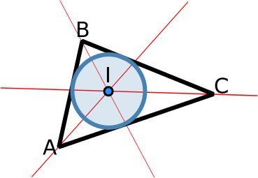
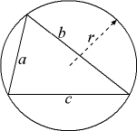

O triângulo é outra figura geométrica básica e que possui imensas aplicações.
Existem várias formas de especificar um triângulo. Definir os seus vértices, os seus ângulos ou, sem associação a coordenadas, definir a dimensão dos seus lados.
A classe seguinte opta por ter duas representações mutuamente exclusivas, uma definida pelos seus vértices e outra pela dimensão dos seus lados. Assim, consoante a informação disponível no problema, podemos construir um triângulo adequado. Para tal, haverá um atributo booleano que nos informa qual a representação de um dado objeto:
class Triangle { Point A, B, C; // defined by points double a, b, c; // defined by sizes (no fixed reference) boolean byPoints; // informs which representation we are using public Triangle(double a, double b, double c) { this.a=a; this.b=b; this.c=c; byPoints=false; } public Triangle(Point a, Point b, Point c) { this.A=a; this.B=b; this.C=c; byPoints=true; } public static double area(double a, double b, double c) { // Heron's formula double s = (a+b+c)/2.0; // semi-perimeter return sqrt(s*(s-a)*(s-b)*(s-c)); } // another method: https://www.futilitycloset.com/2018/09/07/neat-3/ public static double area(Point p1, Point p2, Point p3) { return area(p1.distance(p2), p2.distance(p3), p3.distance(p1)); } public double area() { return byPoints ? area(A,B,C) : area(a,b,c); } public static double perimeter(Point p1, Point p2, Point p3) { return p1.distance(p2) + p2.distance(p3) + p3.distance(p1); } public double perimeter() { return byPoints ? perimeter(A,B,C) : a+b+c; }
O próximo método devolve o círculo inscrito num triângulo:

Este círculo pode ser descoberto pela intersecção de linhas que bisectam os ângulos do triângulo [ref]:
// returns the triangle's incircle public Circle inCircle() { if (!byPoints) return null; Line angleBisector1 = Line.angleBisector(A, B, C), angleBisector2 = Line.angleBisector(B, A, C); Point center = angleBisector1.intersect(angleBisector2); double radius = Triangle.area(A, B, C) / (0.5*Triangle.perimeter(A, B, C)); return new Circle(center, radius); }
Também podemos calcular o círculo que inscreve o triângulo.

Este centro é a intersecção dos bisectores dos lados dos triângulos (o raio possui uma fórmula direta, cf aqui)
// returns the triangle's outcircle public Circle outCircle() { if (!byPoints) return null; Line b1 = Line.bisector(A, B), b2 = Line.bisector(B, C); Point center = b1.intersect(b2); double radius = A.distance(B)*B.distance(C)*C.distance(A) / (4*Triangle.area(A, B, C)); return new Circle(center, radius); }
De notar que só podemos devolver estes círculos quando trabalhamos com a representação do triângulo por vértices.
Se tivermos só os lados, apenas podemos conhecer o raio destes círculos:
// returns the triangle's incircle radius (if we just know the sizes) // @pre: !byPoints public double radiusInCircle() { return Triangle.area(a, b, c) / (0.5*(a+b+c)); } // returns the triangle's outcircle radius (if we just know the sizes) // @pre: !byPoints public double radiusOutCircle() { return a*b*c / (4*Triangle.area(a, b, c)); }
Outro método útil é saber quais os ângulos do triângulo. Se tivermos apenas os lados, os ângulos podem ser calculados pelas leis dos cosenos.
// return array of the triangle angles in radian // to translate to degree use: // Arrays.stream(t.angles()).map(rad -> rad*180.0/PI).toArray(); public double[] angles() { if (byPoints) return new double[] {Point.angle(C,A,B), Point.angle(A,B,C),Point.angle(B,C,A)}; else { double a2=a*a, b2=b*b, c2=c*c; return new double[] {acos((b2+c2-a2)/(2*b*c)), acos((c2+a2-b2)/(2*a*c)), acos((a2+b2-c2)/(2*a*b))}; } }
Uma nota sobre o método de cálculo da área. A fórmula de Heron é muito conhecida e matematicamente correta. Porém, no mundo dos double's esta fórmula levanta problemas de aproximação no caso de triângulos muito finos, onde dois lados são muito maiores que outro. Isto porque o semi-perímetro s vai ser muito similar aos dois lados maiores, e a subtracção de dois números muito similares pode levar a perda catastrófica de precisão (cf. o tutorial sobre este assunto).
Nesta situação, deve-se substituir por uma fórmula equivalente mais estável. A seguinte foi criada por William Kahan (devem respeitar os parenteses):
$$A = \frac{1}{4} \sqrt{(a+(b+c))(c-(a-b))(c+(a-b))(a+(b-c))}$$Problemas UVas sugeridos: